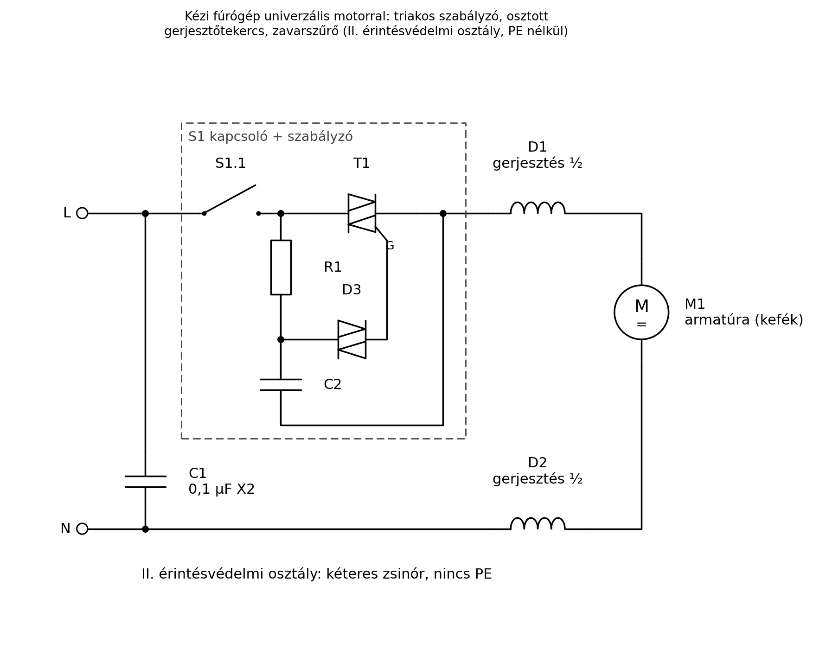
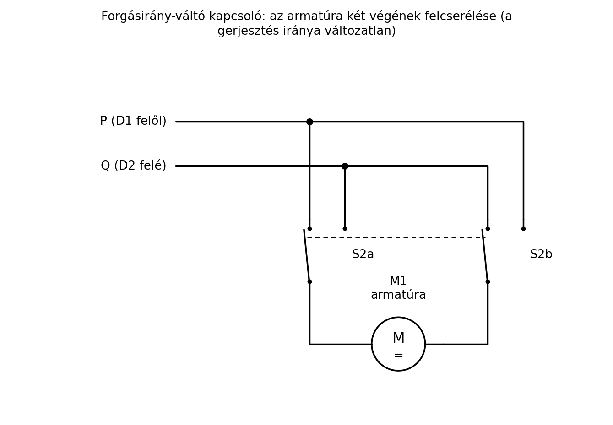
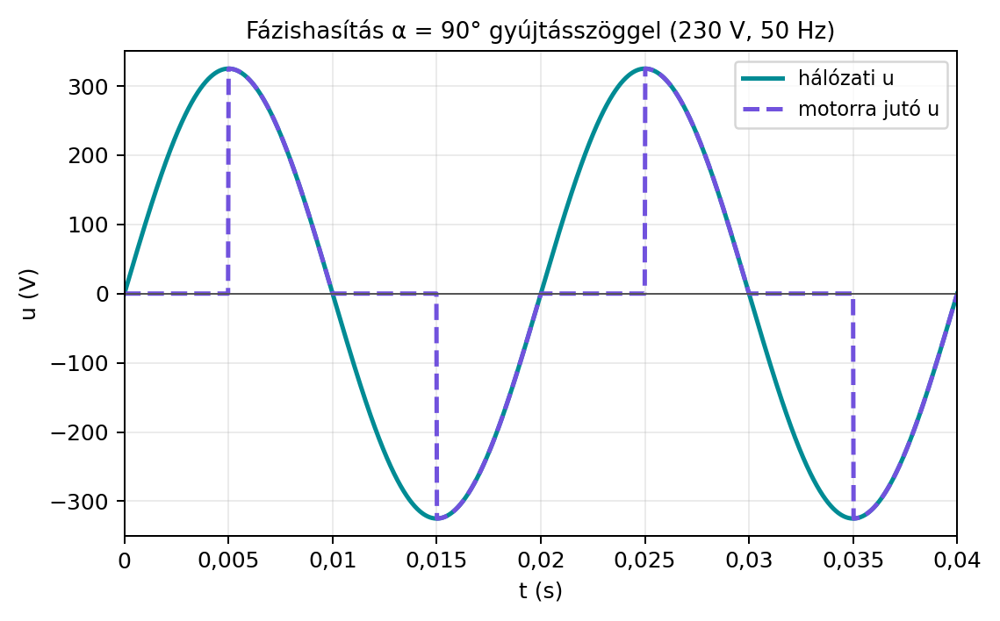
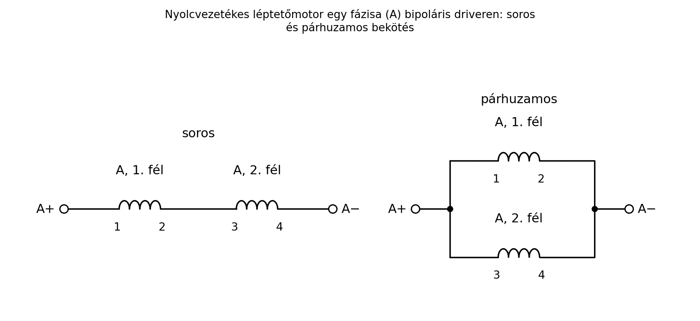

![Bekötési rajz: L, N, PE a B6-os F1 kismegszakítón át a T1 230 V AC / 48 V DC tápegységre; a V+ ág az F2 6,3 A-es lomha biztosítón és a K1 érintkezőn át az U1 driver VDC kapcsára, a V− a GND-re. A driver A+, A−, B+, B− kapcsai árnyékolt négyeres W1 kábellel az M1 hibrid léptetőmotorhoz mennek, az árnyékolás a driver oldalán PE-re kötve. A driver PUL+, PUL−, DIR+, DIR−, ENA+, ENA− kapcsai érpáronként az A1 PLC Q0.0, Q0.1, Q0.2 kimenetére és M kapcsaira csatlakoznak. A 24 V-os L+ sínről a B1, B2 kényszernyitású bontó végálláskapcsoló, a B3 záró referenciakapcsoló és az S0 vészleállító második bontója a PLC I0.0–I0.3 bemenetére, az S0 első bontója a K1 tekercsére megy.](figures/img/ve102-4.png)
Az univerzális motor a barkácsgépekben, a BLDC/EC motor a modern szellőztetésben és az elektromos járművekben, a léptetőmotor a CNC-gépekben és a 3D-nyomtatókban, a szervomotor pedig az ipari robotokban dolgozik. Villanyszerelőként nem elég az aszinkron motort ismerni: ha egy kéziszerszámot javítasz, egy szellőzőrendszert korszerűsítesz, vagy egy gyártógép vezérlését kell bekötnöd, ezeknek a különleges motoroknak a működését és vezérlési igényét pontosan értened kell. A rossz kiválasztás nemcsak műszaki hibát, hanem gyors elhasználódást, zajt, lépéskihagyást vagy akár a gép önmagát szétverő rezonanciáját is okozhatja.
Motiváció. Egy kézi fúrógépnek nagy legyen az indítónyomatéka, terhelés hatására is forduljon, és lehetőleg könnyű legyen. Ugyanez a feladat áll az ipari porszívók, sarokcsiszolók, fűnyírók előtt.
Definíció. Az univerzális motor olyan kommutátoros, soros gerjesztésű motor, amely egyenfeszültségről és egyfázisú váltakozó feszültségről egyaránt üzemel. A név onnan ered, hogy a hálózati feszültség típusára nézve „univerzális”: DC és AC is működteti.
Működés. Az állórész gerjesztőtekercse és a forgórész (armatúra) sorba van kötve. A nyomatékot a gerjesztő mágneses fluxus és a forgórészáram szorzata adja:
ahol a gép konstrukciós állandója, a gerjesztőfluxus, pedig a forgórészáram. Soros kapcsolás miatt mindkettőt ugyanaz az áram hozza létre, ezért kis közelítéssel:
Ez a kulcsa a jóindulatú nyomatéknak: indulásnál, amikor a forgórész még lassú, nagy áram folyik, nagy fluxus jön létre, ezért nagy a nyomaték. Ha a gép felgyorsul, az armatúrában indukált ellenfeszültség megnő, az áram lecsökken, a nyomaték visszaesik.
Miért működik váltakozó áramon? Ha a hálózat polaritása minden félperiódusban megfordul, a gerjesztőfluxus és a forgórészáram iránya is egyszerre fordul meg. A két előjelváltás egymást kompenzálja, így a nyomaték átlagos iránya változatlan marad. A pillanatnyi nyomaték ugyan -es lüktetést mutat, de a gép tehetetlensége ezt kisimítja. (A vasveszteség miatt a gép hatásfoka váltakozó áramon valamivel rosszabb, de a működés stabil.)
Jelleggörbe. Az univerzális motor fordulatszám-nyomaték jelleggörbéje erősen eső: üresjárásban hajlamos a megszaladásra, mert kis terhelésnél az áram, és vele a soros gerjesztés fluxusa is lecsökken, így a fordulatszám erősen megnő. Ezt minden gyakorlati útmutatóban figyelembe kell venni: a motort terhelés nélkül, hosszan ne járassuk.
Alkalmazás. Háztartási kisgépek (porszívó, turmixgép, hajszárító motorja), kéziszerszámok (fúró, csiszoló, sarokköszörű), kerti gépek. Az univerzális motor egyszerű, nagy fordulatszámú, feszültségszabályozással (soros félvezetős fázishasítás) széles tartományban fordulatszám-szabályozható.
Kapcsolás. Egy szabályozható fordulatszámú kézi fúrógép belső kapcsolását mutatja a következő rajz. A gép kettős szigetelésű (II. érintésvédelmi osztályú) – műanyag háza miatt nincs PE-vezetéke, a hálózati zsinór kéteres. A gerjesztőtekercs két félre van osztva, és a két fél az armatúra két oldalán ül: így a kefe-szikrázás okozta zavar mindkét hálózati vezeték felé „fojtva” jut ki. A hálózati bemeneten a C1 X2 osztályú zavarszűrő kondenzátor a rádiófrekvenciás zavart szűri. Az S1 nyomókapcsoló két részből áll: egy be-/kikapcsoló érintkezőből és egy triakos fordulatszám-szabályzóból, amelynek RC-tagja a kapcsoló nyomásmélységével állított ellenállással (R1) változtatja a gyújtásszöget.

Kövesd végig az áramutat: L → S1.1 → T1 triak → D1 → armatúra (M1) → D2 → N. Amíg a triak nem gyújt, a motoron nincs feszültség; az R1–C2 tag a félperiódus elejétől tölti a C2-t, és amikor a feszültsége eléri a D3 diak átütési feszültségét, a diak gyújtóimpulzust ad a triak G elektródájára. Nagyobb R1 → lassabb töltés → későbbi gyújtás → kisebb effektív feszültség → kisebb fordulatszám.
Forgásirány-váltás. A tápfeszültség polaritásának cseréje az univerzális motort nem fordítja meg, mert a gerjesztőtekercs és az armatúra árama egyszerre fordul (ezért működik váltakozó áramon is). Irányt váltani csak úgy lehet, hogy a két tekercs közül csak az egyikben fordítjuk meg az áram irányát – a fúrógépek jobbos/balos kapcsolója jellemzően az armatúra két végét cseréli fel két váltóérintkezővel:

Fázishasítás röviden. A triak a hálózati félperiódus egy adott szögénél gyújt, és a félperiódus végéig (az áram nullátmenetéig) vezet. Minél később gyújt, annál kisebb a motorra jutó feszültség effektív értéke, és annál kisebb a fordulatszám. Az alábbi grafikon -os gyújtásszöget mutat (ellenállásos terhelést feltételezve; a motor induktivitása miatt a valóságban az áram a nullátmenet után még egy kicsit folyik):

Hibakeresés kéziszerszámon. Minden mérés előtt: a dugót kihúzzuk (a hordozható gépnél ez a leválasztás), a gépet a munkapadon rögzítjük, a mérést a dugó két érintkezőjén vagy a megbontott gépen végezzük. A javított gépet a készülékek ismétlődő vizsgálata szerint kell ellenőrizni, mielőtt visszaadjuk.
| Jelenség | Valószínű ok | Mérés, ellenőrzés |
|---|---|---|
| Nem indul | Zsinórszakadás a törésvédőnél; kopott kefék; hibás kapcsoló | Folytonosság a dugó L és N érintkezője között kapcsoló BE állásban, a zsinór hajlítgatása közben; kefehossz mérése (kopáshatár-jel); átmenet mérése a kapcsolón |
| Erős szikrázás, körtűz a kommutátoron | Armatúra-menetzárlat; a kefe nem fekszik fel, kommutátor kopott | Szeletmérés: két szomszédos kommutátorszelet közti ellenállás mindenhol közel egyforma; „growler” (armatúravizsgáló); kefe és kefetartó szemrevételezése |
| Csak teljes fordulattal megy | A szabályzó elektronika (triak) átütött | A kapcsoló cseréje egységként; mérés: a triak kikapcsolt állapotban is vezet |
| Rádió-, tévézavar | C1 X2 kondenzátor kiesett vagy szakadt | Kapacitásmérés a C1-en; csere azonos (X2) osztályú kondenzátorra |
| Melegszik, égett szag | Armatúra-zárlat, csapágyhiba, eltömődött szellőzőnyílás | Armatúra-ellenállás forgatás közben; csapágy kézi forgatással (zörej, holtjáték); hűtőnyílások tisztítása |
| Csak egy irányba megy | Irányváltó kapcsoló hibás | Átmenet mérése a két váltóérintkezőn mindkét állásban |
Mérések és elvárt értékek (szemléltető, gépfüggő): a két gerjesztőtekercs-fél ellenállása egyenként 1–5 Ω, és a két fél közel egyforma; az armatúra a keféken át mérve 2–10 Ω, a tengelyt lassan forgatva egyenletes (ugráló érték: szakadt vagy zárlatos szelet, rossz kefeérintkezés); a szigetelési ellenállás a hálózati érintkezők (összekötve) és a megérinthető fémrészek (tokmány, tengely) között II. osztályú gépnél legalább 2 MΩ, egyes gyártói és régebbi előírások szerint 7 MΩ (ellenőrizendő: MSZ EN 50678 és a gyártói javítási utasítás).
Kefecsere lépései. (1) Dugó kihúzva, a gép rögzítve. (2) A kefefedél vagy a ház megbontása, a régi kefék kivétele, a kopáshatár-jel ellenőrzése (mindkét kefét együtt cseréljük). (3) A kommutátor szemrevételezése: ha barázdált, beégett vagy erősen kopott, a gépet szakszervizbe adjuk. (4) Csak az eredeti típusú (méretű, anyagú, automatikus lekapcsolójú) kefe használható. (5) Összeszerelés után a kefét bejáratjuk: a gépet terhelés nélkül rövid ideig járatjuk, a gyártó utasítása szerint – hosszan terhelés nélkül nem, mert a soros motor üresjárásban megszalad. (6) Végül a javítás utáni ellenőrzés (szigetelési ellenállás, működési próba) és a jegyzőkönyv.
Motiváció. A hagyományos kommutátoros egyenáramú motor karbantartást igényel: a szénkefék kopnak, a kommutátor koszolódik, és a kefe szikrázása miatt zajos is. A modern épületgépészeti ventilátorok viszont hosszú, karbantartásmentes élettartamot várnak el. Erre a megoldás a kefementes, elektronikusan kommutált motor.
Definíció. A kefementes egyenáramú motor (BrushLess DC, BLDC) állandó mágnesű forgórésszel és háromfázisú állórésztekercseléssel rendelkező szinkronmotor, ahol a mechanikus kommutátort teljesítményelektronikai inverter helyettesíti. A köznyelvben az EC-motor (Electronically Commutated) is elterjedt.
Működés. A forgórész állandó mágneseket hordoz, így nincs szüksége áramra, kefére vagy csúszógyűrűre. Az állórész három tekercspárját az inverter úgy kapcsolja, hogy az éppen a forgórész pólusaihoz képest megfelelő pozícióban elforgatott mágneses mezőt hozzon létre. Ahhoz, hogy az inverter „tudja”, éppen hol van a mágnes, helyzetérzékelés kell:
Egy BLDC motor tehát önmagában nem üzemel, mindig hozzá tartozik egy elektronikus hajtás, amely a hálózati feszültséget egyenirányítja, és a háromfázisú tekercsre változó frekvenciájú, változó feszültségű jelet kapcsol.
Előnyök. A kefe elhagyása a kopó alkatrészek számát csökkenti, a hatásfokot növeli, a zajt csökkenti. A BLDC motor fordulatszáma nagyon pontosan szabályozható, és alacsony fordulatszámon is magas nyomatékot ad le. A motort hűteni is könnyebb, mert az állórész tekercsei közel vannak a házhoz.
EC ventilátorok. Az épületgépészetben az EC motor előnye, hogy a ventilátor és a motor egy egységbe integrálható, a járókerék közvetlenül a külső forgórészre van szerelve, és a forgórész állandó mágneseinek mezője hozza létre a forgatónyomatékot. Az EC ventilátorok (főleg a radiál és axiál típusok) rendkívül jó hatásfokkal működnek, és folyamatos, széles tartományú fordulatszám-szabályozást tesznek lehetővé, például analóg jellel vagy Modbus hálózaton keresztül.
A két kivitelt és a hajtáselektronika kapcsolatát a következő ábra mutatja. A belső forgórészes motornál (a) kívül van a hornyolt állórész az U, V, W fázistekercsekkel, belül forog az állandó mágneses (É–D) forgórész; a forgórész helyzetét a három Hall-érzékelő (H1–H3) jelzi. A külső forgórészes EC-ventilátornál (b) a tekercselés belül áll, és a mágnesekkel bélelt harang forog körülötte – erre van építve a járókerék. A (c) rész a bekötést mutatja: a motor három teljesítményvezetéke (U, V, W) és a Hall-jeladó öt vezetéke (+5 V, 0 V, H1–H3) is az inverterhez fut.
Ebből következik a szerelési szabály: BLDC/EC motort soha nem szabad közvetlenül a hálózatra vagy egy egyenfeszültségű forrásra kötni, csak a hozzá tartozó hajtásra; a Hall-jeladó vezetékeit a teljesítményvezetékektől elkülönítve vezesd. Az EC-ventilátoroknál a hajtás gyakran a motorba van építve, ilyenkor a ventilátor közvetlenül hálózati betáplálást és alapjelet kap – a bekötést a gyártói rajz adja. A HTML-kiadásban a három panel külön nagyítható.
Motiváció. Egy 3D-nyomtató nyomtatófeje nem állhat meg „körülbelül” a megfelelő ponton: minden lépést meghatározott szöggel kell megtennie visszacsatolás nélkül, nyitott hurkban. A léptetőmotor éppen erre való.
Definíció. A léptetőmotor olyan többfázisú szinkronmotor, amely a vezérlő impulzusok hatására diszkrét szögelfordulásokat (lépéseket) hajt végre. A lépésszög a motor konstrukciójától függ, tipikusan vagy lépésenként.
Lépésszög számítása. Ha a motor lépést tesz meg fordulatonként (ez a leggyakoribb -os hibrid léptető), a fordulatszám:
Működés. A motor belső felépítésében a forgórész állandó mágnesekkel és sok fogazott vasmaggal rendelkezik. Az állórész tekercseit a vezérlő sorban gerjeszti. Minden gerjesztési lépésben a forgórész legközelebbi stabil pozíciója az adott lépéshez tartozó mágneses csatornához igazodik, így a motor pontosan (vagy a mikroléptetés beállításától függően kisebb) szöget fordul.
A léptetőmotor nyomatéka. A motor statikus nyomatéka (holding torque) nagy, de a fordulatszám növekedésével a nyomaték meredeken csökken. A motor kritikus hibaállapotba kerülhet: ha a terhelő nyomaték nagyobb a rendelkezésre álló nyomatéknál, a rotor nem tudja követni a mezőt, és ugrálni kezd, azaz lépéseket veszít. Ezt a tervezésnél kerülni kell: a léptetőmotort mindig a tényleges működési fordulatszámon érvényes nyomatékra kell méretezni, nem a statikus tartási nyomatékra.
Alkalmazás. CNC- és lézeres vágógépek, 3D-nyomtatók, teleszkópok, orvosi adagolók, régi nyomtatók, léptetőmotoros szelepek.
A leggyakoribb, hibrid léptetőmotor felépítését a következő ábra mutatja. Az (a) keresztmetszeten a lemezelt állórész (1) nyolc pólusának végén apró fogak vannak; a pólusok felváltva az A (2) és a B fázis (3) tekercseit hordozzák. A fogazott forgórész (4) – az 1,8°-os motornál 50 foggal – a (b) részen oldalnézetben látszik: két fogazott félkorongból áll, köztük tengelyirányban mágnesezett állandó mágnes (5), így az egyik félkorong É, a másik D, és fogaik fél fogosztással el vannak tolva. A (c) rész a bipoláris motor négy kivezetését mutatja (A+, A−, B+, B−) a meghajtóhoz.
Az 50 forgórészfog és a négy gerjesztési állapot (A+, B+, A−, B−) adja a lépést fordulatonként, azaz az -os lépésszöget. Bekötéskor a két tekercspárt ellenállásméréssel lehet azonosítani (egy pár két vége között kis ellenállás mérhető, a két pár között szakadás); a vezetékszíneket a gyártói adatlap adja. Ha a motor rezeg, de nem forog, gyakran az egyik tekercspár fordítva vagy felcserélve van bekötve. A HTML-kiadásban a részek rámutatásra kiemelődnek.
A gépben a szerelő nem csak a motor négy vezetékét köti be, hanem a teljes láncot: hálózat → kismegszakító → egyenfeszültségű tápegység → léptető-driver → motor, a vezérlő oldalon pedig a PLC impulzus-, irány- és engedélyező kimeneteit, valamint a végállás- és referenciakapcsolókat. A következő rajz egy tengely tipikus bekötését mutatja; a kapocsjelek (PUL, DIR, ENA, VDC, A+…B−) a legelterjedtebb driverek jelölései, a pontos kiosztást mindig a gyártói rajz adja.
Hogyan olvasd a rajzot? Kövesd először a teljesítményutat balról jobbra: az F1 (B6) a tápegység primer oldalát védi, az F2 lomha biztosító a 48 V-os egyenáramú oldalt (a driver és a vezeték zárlata ellen), a K1 érintkezője vészleállításkor a driver tápját bontja. A driver kimenete a motor két tekercspárja (A+/A−, B+/B−); a motorkábel árnyékolt, az árnyékolást a driver oldalán bilinccsel PE-re kötjük. A vezérlőjelek párosan érkeznek: a driver bemenetei optocsatolósak, a PUL+ a PLC Q0.0 kimenetére, a PUL− a PLC 0 V-jára (M) kerül, ugyanígy a DIR és az ENA. A 24 V-os PLC-jelszinthez a driver adatlapja szerinti bemenetet kell használni: sok driver 5 V-os optocsatoló-bemenetű, ilyenkor soros ellenállás kell (ellenőrizendő: gyártói adatlap). A B1, B2 végálláskapcsoló kényszernyitású bontó (21–22): szakadt vezeték vagy kioldott kapcsoló esetén a PLC bemenete 0 lesz, és a tengely megáll – ezért nem zárót használunk. A B3 referencia- (alaphelyzet-) kapcsoló záró. Az S0 vészleállító egyik bontója a K1 tekercsét ejti (a driver tápja megszűnik), a másik a PLC-nek jelez, amely elveszi az ENA jelet. Hogy egy adott gépnél ez a megoldás elegendő-e, a kockázatértékelés és a gépbiztonsági szabványok döntik el (ellenőrizendő: MSZ EN 60204-1, MSZ EN ISO 13849-1); a vészleállító kezelőszerveit a Direktindítás, önfenntartás és kezelőszervek, a PLC bemeneteit és kimeneteit a PLC-alapok és ipari vezérlés alfejezet tárgyalja.
Ellenőrző kérdés: mi történik a rajz szerint, ha a B2 vezetéke a kapcsoló és a PLC között elszakad? (A PLC I0.1 bemenete 0 lesz, mintha a tengely a „−” végálláson lenne: a tengely abba az irányba nem mozdul tovább. A bontó kapcsoló így a vezetékszakadást is „biztonságos” irányba jelzi.)
Mikrolépés és áram beállítása. A driver DIP-kapcsolóival két dolgot állítunk: a mikrolépés-osztást és a tekercsáramot. Az alábbi táblázat egy 1,8°-os (200 lépés/fordulat) motorra mutatja a mikrolépés hatását (a kapcsolóállások gyártónként eltérnek – szemléltető táblázat):
| Mikrolépés-osztás | Impulzus fordulatonként | Szögfelbontás impulzusonként |
|---|---|---|
| 1 (teljes lépés) | 200 | 1,8° |
| 2 | 400 | 0,9° |
| 4 | 800 | 0,45° |
| 8 | 1600 | 0,225° |
| 16 | 3200 | 0,1125° |
Az áramot (tipikusan 1,0–4,2 A között állítható) a motor adattábláján szereplő névleges fázisáramhoz kell igazítani: egy 2,8 A-es motorhoz 2,8 A, attól függően, hogy a driver csúcs- vagy effektív értéket ír a kapcsolója mellé (ellenőrizendő: a driver és a motor adatlapja). A nagyobb áram nagyobb nyomatékot, de több melegedést ad. A legtöbb driver álló helyzetben automatikusan csökkenti az áramot (áramcsökkentés, idle current).
Hat- és nyolcvezetékes motorok bipoláris driveren. A nyolcvezetékes motor fázisonként két tekercsfélt ad (1–2 és 3–4 kivezetés). Bipoláris driveren két bekötés lehetséges: soros (a 2 és a 3 összekötve, a driverre az 1 és a 4 kerül) – nagyobb nyomaték kis fordulatszámon, a névleges áram fele kell; párhuzamos (1 a 3-mal, 2 a 4-gyel) – jobb nyomaték nagy fordulaton, a névleges áram kb. 1,4-szerese (ellenőrizendő: motoradatlap). A hatvezetékes motornál a középkivezetést szabadon (szigetelve) hagyjuk, és a teljes tekercset kötjük be (soros bekötésnek felel meg). A tekercsfelek kezdetét és végét a gyártó a vezetékszínnel jelöli; ha a második fél fordítva kerül be, a két fél tere kioltja egymást, és a motor nem ad nyomatékot.

A rajz alapján gondold végig: soros bekötésnél ugyanaz az áram mindkét tekercsfélen átfolyik, ezért fele akkora áram is ugyanakkora gerjesztést ad; párhuzamosnál az induktivitás a soros bekötéshez képest negyedére csökken, így nagy fordulatszámon is gyorsan felépül az áram.
Hibakeresés léptetőhajtásnál. A leggyakoribb jelenségek és teendők (a méréseket feszültségmentes állapotban, az öt szabály betartásával végezzük; a működési próbát a gép kezelési utasítása szerint):
| Jelenség | Valószínű ok | Mit mérsz / mit teszel? |
|---|---|---|
| A motor rezeg, búg, de nem forog | Az egyik tekercspár felcserélve vagy egy fél fordítva bekötve | Ellenállásmérés a párok azonosítására (pár: néhány ohm, párok között szakadás); a pár két vezetékének cseréje |
| Csak egy irányba megy | DIR jel hiányzik vagy rossz szintű (DIR− nincs a 0 V-on) | DIR+ és DIR− közti feszültség mérése irányváltáskor (24 V / 0 V); a DIR-pár bekötése |
| Nagy sebességen lépést veszít | A tápfeszültség kicsi, túl nagy a gyorsítás, kicsi az áram | Tápfeszültség és áram-DIP ellenőrzése; a rámpa (gyorsítás) csökkentése; a nyomaték–fordulatszám görbe szerinti méretezés |
| Álló helyzetben erősen melegszik | Áramcsökkentés kikapcsolva vagy túl nagy áram beállítva | Áram-DIP és áramcsökkentés ellenőrzése; a ház 60–80 °C-ig általában még megengedett (ellenőrizendő: motoradatlap) |
| Véletlenszerű elmozdulás, „ugrálás” | Zavarjel a PUL vezetéken: hiányzó árnyékolás, a jelkábel a motorkábellel párhuzamosan fut | Árnyékolás és PE-bilincs ellenőrzése, a jel- és motorkábel külön vezetése, sodrott érpár |
| A driver nem engedélyez, a motor „laza” | ENA jel rossz logikájú, vagy a K1 nem húzott be | ENA szint mérése (a driver szerint aktív vagy inaktív állapotban engedélyez); S0 és K1 állapota |
Motiváció. Az ipari robot karjának gyorsan kell mozognia, mégis pontosan megállni. Itt a nyitott hurkú léptetőmotor már nem elég, mert a terhelés változását a vezérlő nem látja. A szervohajtás visszacsatolt rendszer: a motor tényleges pozícióját folyamatosan méri, és a hibát korrigálja.
Definíció. A szervomotor olyan villamos hajtás, amely zárt hurkú szabályozással, visszacsatoló jeladóval (encoder vagy resolver) ellátva működik. A leggyakoribb az AC szervomotor, amely valójában állandó mágneses szinkronmotor (PMSM) vagy BLDC motor, de kifejezetten dinamikus ipari hajtásra tervezték.
A szervo és a léptetőmotor különbsége. A léptetőmotor nyitott hurkú, a szervo zárt hurkú. A szervomotor visszajelzi az aktuális pozíciót, így ha a gép nagy erő hatására elmozdulna, a vezérlő azonnal korrigál. A szervomotor nagy fordulatszámon is megőrzi nyomatékát, így gyors kontúrkövetésre sokkal jobb, mint a léptető.
Vezérlés. A szervomotorhoz mindig hozzátartozik egy szervohajtás (servo drive), amely három hurkot zár:
A hajtás a jelet többféle módon fogadhatja: analóg feszültség, impulzus (pulse train), vagy digitális terepi busz (CANopen, PROFINET, EtherCAT). A terepi busz a modern gyártósorokban a legelterjedtebb.
A tartófék csak állásban rögzíti a tengelyt (például függőleges tengelynél áramkimaradáskor), mozgó terhet fékezni nem erre való. A motorkábel és a jeladókábel összekeverése, a hiányzó árnyékolás vagy a laza jeladócsatlakozó a leggyakoribb oka a hajtás „enkóderhiba” jelzésének. A kábelezés részleteit a hajtás gyártójának EMC-útmutatója adja. A HTML-kiadásban a részek rámutatásra kiemelődnek.
Az Univerzális, léptető, szervó és BLDC motorok-3 ábra a motor és a kábelezés elvét mutatta. A kapcsolószekrényben ennél több elemet kell bekötni: a hajtás saját védelmét és hálózati mágneskapcsolóját, az EMC-szűrőt, a külső fékellenállást, a tartófék 24 V-os körét és a biztonságos nyomatékmentesítés (STO) kétcsatornás bemenetét. A következő rajz egy tipikus bekötést mutat (a kapocsjelek szemléltetők, gyártónként eltérnek – a fékkimenet jele például BR+/BR− vagy BK+/BK− is lehet).
![Bekötési rajz: L1, L2, L3, PE a háromfázisú Q1 motorvédőn és a K1 főérintkezőin át a Z1 EMC-szűrőre, onnan az U1 szervohajtás L1–L3 és PE kapcsára. Az U1 U, V, W, PE kimenete árnyékolt, mindkét végén EMC-bilinccsel rögzített kábellel az M1 szervomotorhoz megy; a BK+ és BK− kimenet a motorban levő Y1 tartófékre, mellette V1 szabadonfutó dióda; az X3 enkóderkábel külön fut. A B+ és BR kapocsra az R1 külső fékellenállás csatlakozik. Az A2 vészleállító-modul S11–S22 bemeneteire az S0 vészleállító két bontója, 14 és 24 kimenete az U1 STO1 és STO2 bemenetére kerül. A K1 tekercse 24 V-ról az A2 33–34 engedélyező érintkezőn, az R1 hőkapcsolóján, az U1 hibarelé 11–12 bontóján és az S1 nyomógombon át kap feszültséget, K1 13–14 önfenntartással. A T2 tápegység 230 V AC-ből 24 V DC-t ad.](figures/img/ve102-6.png)
A rajz olvasása. A főáramkör balról jobbra: Q1 (a hajtás gyártója által előírt motorvédő vagy kismegszakító) → K1 hálózati mágneskapcsoló → Z1 hálózati EMC-szűrő → U1 hajtás → árnyékolt motorkábel → M1. A K1 vezérlőköre egy önfenntartásos kör (lásd a Direktindítás, önfenntartás és kezelőszervek alfejezetet), de a soros láncba három „engedély” kerül: az A2 vészleállító-modul 33–34 érintkezője, a fékellenállás R1 hőkapcsolója (túlmelegedéskor bont) és a hajtás hibarelé-bontója. Bármelyik bont, a K1 elenged, és a hajtás hálózati táplálása megszűnik. Az S0 vészleállító két csatornán (S11–S12, S21–S22) jelez az A2 modulnak, amely két külön kimenettel (14, 24) veszi el a hajtás STO1 és STO2 bemenetét.
1. A tartófék vezérlési sorrendje. Indításkor: a hajtás engedélyt kap → a motor nyomatéka felépül (a hajtás tartja a tengelyt) → a fék old (a fékoldási idő tipikusan 50–200 ms, a hajtás paramétere a motor adatlapja szerint) → mozgás. Leállításkor fordítva: a tengely megáll és a hajtás tartja → a fék behúz → a fékezési idő letelte után a hajtás elveszi a nyomatékot. Ha a fék előbb old, mint ahogy a nyomaték felépül, egy függőleges tengely lezuhanhat; ha a hajtás előbb veszi el a nyomatékot, mint ahogy a fék behúzott, a teher megcsúszik. Ezért a féket a hajtás saját fékkimenete (BK+/BK−) kapcsolja, nem a PLC egy tetszőleges kimenete. A féktekercs induktív terhelés: ha a hajtás kimenete nem tartalmaz védelmet, V1 szabadonfutó diódát vagy varisztort kell a tekercsre kötni.
2. Az STO nem feszültségmentesítés. Az STO (Safe Torque Off, biztonságos nyomatékmentesítés) azt garantálja, hogy a hajtás nem ad nyomatékot a motorra – a teljesítmény-félvezetők vezérlését tiltja. A motorkapcsokon és a DC-köztes körben ettől még veszélyes feszültség lehet. Munka előtt ezért az öt szabály szerint kell eljárni: a Q1-et ki kell kapcsolni és biztosítani, majd ki kell várni a DC-köztes kör kisülési idejét (a hajtás címkéjén és kézikönyvében megadott idő, gyakran 5–15 perc), és feszültségmentességet kell mérni. Az STO kategóriáját és teljesítményszintjét a kockázatértékelés határozza meg (ellenőrizendő: MSZ EN 61800-5-2, MSZ EN ISO 13849-1, a hajtás kézikönyve).
3. Miért kell fékellenállás? Ha a hajtás lassítja a motort (vagy egy függőleges tengely süllyed), a motor generátorként dolgozik, és energiát táplál vissza a DC-köztes körbe. A köztes kör kondenzátorai ezt csak kis mértékben tudják tárolni, a feszültség megnő, és a hajtás „túlfeszültség” hibával leáll. A fékellenállás ezt az energiát hővé alakítja: a hajtás a B+ és BR kapocs közé kötött R1-et akkor kapcsolja be, amikor a köztes kör feszültsége egy küszöböt átlép. A fékellenállás melegszik, ezért hőkapcsolóját a K1 vezérlőkörébe (vagy a hajtás hibabemenetére) kötjük, és a szekrényben úgy helyezzük el, hogy a hő ne károsítsa a többi készüléket.
Ellenőrző kérdés: a rajz szerint mi történik, ha a fékellenállás túlmelegszik? (Az R1 hőkapcsolója bont, a K1 tekercse elenged, a hajtás hálózati betáplálása megszűnik, a hajtás leáll, a tartófék behúz. Újraindítás csak a lehűlés és az S1 megnyomása után lehetséges.)
Az alábbi ábra a tárgyalt különleges motorokat hasonlítja össze néhány gyakorlati szempont szerint.
![Különleges motortípusok összehasonlítása - Szemléltető besorolás 1-től 4-ig (4 = legkedvezőbb). Oszlopok: Hatásfok; Csend = csendesség; Karbant. = karbantartás-mentesség; Élettart. = élettartam; Nyom. = nyomaték kis fordulaton; Vezérl. = a vezérlés egyszerűsége. Az univerzális motor soros gerjesztése miatt kis fordulaton nagy nyomatékú, és egyszerű fázishasítással szabályozható; a léptetőmotor nyílt hurkú impulzusvezérlése jeladó nélkül egyszerű, a szervohajtás hangolást igényel. A végső kiválasztáshoz mindig a gyártói adatlapot kell használni.](assets/ve102-diagram-5.png)
A táblázatból jól látszik, hogy az univerzális motor hatásfokban, zajban és élettartamban a szerényebb kategóriába esik, de olcsó, kis fordulaton nagy nyomatékú és egyszerűen szabályozható. A BLDC/EC motor a hatékonyság és a csendesség bajnoka, a léptető az egyszerű pozícióvezérlésé, a szervo a nagy dinamikájú, zárt hurkú feladatoké.
A pontszámok nem mondják meg, melyik motort válaszd. Ehhez menj végig a kérdéseken; a táblázat „ugorj” oszlopa a következő kérdéshez vagy a motortípushoz visz. A K0 kérdés a nagy gépek külön ágát szűri ki.
| Kérdés | Igen | Nem |
|---|---|---|
| K0: Nagy teljesítmény, terheléstől független fordulat és meddőszabályozás kell? | L7: szinkronmotor | K1 |
| K1: Kell pozícionálás (adott szög vagy út)? | K2 | K3 |
| K2: Nagy dinamika, változó terhelés vagy visszajelzés kell? | L1: szervo | L2: léptető |
| K3: Változó fordulatszám kell? | K5 | K4 |
| K4: Van háromfázisú hálózat? | L4: aszinkron | L6: egyfázisú vagy univerzális |
| K5: Kéziszerszám: kis tömeg, nagy fordulat, rövid üzem? | L6: univerzális | K6 |
| K6: Épületgépészet, ahol a hatásfok és a zaj döntő? | L3: EC/BLDC | L5: aszinkron + frekvenciaváltó |
| Levél | Motor | Példa | Részletek |
|---|---|---|---|
| L1 | szervo | robotkar, nagy dinamikájú CNC-tengely | Univerzális, léptető, szervó és BLDC motorok |
| L2 | léptető | adagoló, címkéző kis tengelye | ugyanitt; a nyomatékot a működési fordulaton ellenőrizd |
| L3 | EC/BLDC | légkezelő ventilátora, keringető szivattyú | ugyanitt |
| L4 | aszinkron, DOL vagy csillag–delta | állandó fordulatú szivattyú | Indítás: közvetlen, csillag–delta, lágyindító, csúszógyűrűs |
| L5 | aszinkron + frekvenciaváltó | szállítószalag, nyomástartó szivattyú | Fordulatszám-változtatás, Dahlander, frekvenciaváltó és fékezés |
| L6 | egyfázisú aszinkron; kéziszerszámnál univerzális | betonkeverő; fúrógép | Egyfázisú aszinkron motorok |
| L7 | szinkron | nagy kompresszor meddőszabályozással | Szinkron generátor és motor, gerjesztés |
A kérdéssor az első szűrés: a végső választást a tényleges nyomaték–fordulatszám igény, a környezet és a gyártói adatlap dönti el. Gyakorlásként lásd a 7. feladatot.
Szabvány. A változtatható fordulatszámú hajtások (így a BLDC, EC és szervohajtások) elektromágneses összeférhetőségi (EMC) követelményeit az MSZ EN 61800-3 sorozat (ellenőrizendő: aktuális kiadás) írja le. A hajtások telepítésénél a gyártó előírásai szerint árnyékolt motorkábelt és megfelelő földelést kell alkalmazni, különben a kapcsolási zaj zavarhatja a környező érzékelőket és a hálózatot.
Emellett a motor védettsége (IP-kód, MSZ EN 60529) kulcskérdés: egy EC ventilátor a nedves, párás légcsatornában vagy védettséget igényelhet. A bekötésre az épületvillamosági hibavédelem szabályai vonatkoznak (MSZ HD 60364).
Klímaszellőztető rendszer korszerűsítése EC ventilátorral.
Egy régi irodaház szellőztetőjében az 1990-es évekből származó, szíjhajtású aszinkron motoros ventilátort EC ventilátorra cserélik. A karbantartó villanyszerelő feladata az új EC ventilátor bekötése és az üzembe helyezés.
A régi motor közvetlenül a hálózatról, mágneskapcsolóval indult. Az új EC ventilátor egyetlen kompakt egység, amelyben a BLDC motor és a frekvenciaváltó egybe van építve. A bekötés során a szerelő a következőket tapasztalja:
Tápellátás: A ventilátor elektronikus hajtása vagy hálózati betáplálást igényel, de a motorhoz vezető kábelen nem közvetlen hálózati feszültség, hanem a hajtásból kijövő változó frekvenciájú jel van. Ha a hajtás és a motor külön egység (nem integrált kivitel), a köztük lévő kábelen a hajtás kimenete van, ezért azt nem szabad hálózati kábelként bekötni; integrált EC ventilátornál ilyen kábel nincs.
Vezérlés: A régi rendszerben a ventilátor vagy állt, vagy teljes fordulaton forgott. Az új EC ventilátor analóg jelet vagy Modbus RTU digitális parancsot fogad. A szerelő az épületfelügyeleti (BMS) rendszer kimenő jelét köti a hajtás analóg bemenetére, és a hajtás paramétereit beállítja: minimális fordulatszám , maximális fordulatszám , lassú felfutás.
Mérés: A beüzemeléskor a szerelő megméri a motor áramfelvételét és a fordulatszámot. A fordulatszámnál az EC ventilátor a régi szíjhajtásos rendszerhez képest energiát takarít meg, és a zajszint jelentősen csökken. A szerelő a csapágyhőmérsékletet is ellenőrzi, mert a motor hosszú távú, karbantartásmentes üzeme a csapágy és az elektronika hűtésén múlik.
A 2. pontban leírt vezérlés kapcsokra bontva a következő rajzon látszik. A kapocsjelek gyártófüggők (ellenőrizendő: a ventilátor gyártói bekötési rajza), a felépítés azonban szinte minden integrált EC-ventilátornál ugyanez: hálózati kapcsok (X1), analóg alapjel (X2), hibarelé (X3) és terepi busz (X4).
![Bekötési rajz: L, N, PE a C10-es F1 kismegszakítón, a 30 mA-es F2 áram-védőkapcsolón és a kétpólusú Q1 javítókapcsolón át az M1 EC-ventilátor X1 kapcsaira. Az X2:1 Ain és X2:2 GND árnyékolt érpárral az A3 épületfelügyelet AO1 és 0 V kapcsára megy, az árnyékolás egy ponton PE-re kötve; az X2:3 +10 V kimenet szaggatottan egy alternatív R1 10 kΩ-os potméterhez. Az X3 hibarelé COM kapcsa a BMS 24 V-os kimenetére, NC kapcsa a DI1 bemenetre kerül, az NO szabad. Az X4 A, B, GND a BMS RS485 kapcsaira, az A és B között R2 120 Ω-os lezáró ellenállás.](figures/img/ve102-7.png)
A rajz olvasása. A hálózati oldalon a F1 kismegszakító C jelleggörbéjű, mert a beépített hajtás egyenirányítója és kondenzátorai bekapcsoláskor nagy áramlökést vesznek fel (ellenőrizendő: gyártói adat, sok gyártó C vagy K karakterisztikát ír elő). Az F2 áram-védőkapcsoló típusát a gyártó adja meg: a beépített frekvenciaváltós hajtás egyenáramú és nagyfrekvenciás szivárgóáramot is okozhat, ezért gyakran F vagy B típus kell (az A típus vakká válhat; lásd az Áram-védőkapcsoló (FI) és kiegészítő védelem alfejezetet). A Q1 javítókapcsoló a ventilátor mellett van, hogy karbantartáskor helyben lehessen leválasztani és lakattal biztosítani. A vezérlőoldalon az X2:1–X2:2 a 0–10 V-os alapjel és annak saját 0 V-ja: a kettőt egy sodrott, árnyékolt érpáron vezetjük, az árnyékolást csak egy ponton (a BMS oldalán) kötjük PE-re, hogy ne folyjon rajta kiegyenlítő áram. Az X2:3 +10 V kimenet arra való, hogy BMS nélkül egy helyi potméterrel (R1, 10 kΩ) is lehessen alapjelet adni. Az X3 hibarelé nyugalmi (NC) érintkezője a BMS felé jelez: a relé üzemben meghúzva tartja nyitva a COM–NC utat, hibánál vagy tápkimaradásnál elenged, és a COM–NC zár – így a ventilátor tápkimaradása is hibaként jelenik meg. (Ha a BMS a jelvezeték szakadását is hibának akarja látni, a COM–NO utat kell bekötni, amely üzemben zárt, és a bemenet logikáját meg kell fordítani – ezt a BMS-programozóval egyeztetni kell.) Az X4 Modbus RTU (RS485) busz sodrott érpárját a busz két végén 120 Ω-os ellenállással zárjuk le (itt a ventilátor az utolsó készülék, ezért R2 nála van).
Üzembe helyezési ellenőrzőlista (EC-ventilátor):
Tanulság. Az EC motor bekötése nem egyszerűen „három fázis + nulla” kérdése. A hajtás beállítását, az árnyékolt vezérlőkábel használatát és az EMC-előírások betartását is bele kell tervezni a munkába.
1. Univerzális motor terhelés nélküli járása. Ha a motor nincs összekötve a hajtott géppel (pl. szíj leszakad), a soros gerjesztés miatt a fordulatszám a névleges többszörösére is felmehet, ami a kommutátor, a kefék vagy a tekercselés szétrobbanásához vezethet. Helyes gyakorlat: bármilyen javítás után mindig a teljes hajtáslánccal együtt próbáljuk be.
2. BLDC/EC motor bekötése hagyományos aszinkron motorként. A BLDC motor nem közvetlenül a hálózatról működik. Ha valaki a fázist és a nullát rákapcsolja a motor kapcsaira, az a tekercsek és az elektronika azonnali tönkremenetelét okozza. Mindig a hozzá való hajtáson keresztül kell táplálni.
3. Léptetőmotor méretezése a statikus tartási nyomatékra. A léptetőmotor tartási nyomatéka nagy, de a nyomaték a fordulatszám növekedésével meredeken csökken. Ha a tervező a statikus nyomaték alapján választ motort, a gép üzem közben lépéseket fog veszíteni. Mindig a működési fordulatszámon érvényes nyomatékra kell méretezni.
4. Szervohajtás paramétereinek gyári értéken hagyása. A szervohajtást a terheléshez kell hangolni. Ha a sebesség- vagy pozícióhurok erősítése túl nagy, a motor bereng, rezeg, sőt a mechanikát is károsítja. Ha túl kicsi, a mozgás pontatlan. A hangolást mindig a gyártó utasítása szerint, lehetőleg üresjáratból terhelt állapot felé haladva kell elvégezni.
Gyakorlás: ennek az alfejezetnek a kidolgozott példái, gyakorlatai és megoldással ellátott feladatai az Összefoglaló feladatgyűjtemény villanyszerelő tanulóknak című kötet 28.2 szakaszában találhatók.
A különleges motorok a villanyszerelői gyakorlatban egyre fontosabbak, mert az energiahatékonysági és automatizálási igények miatt a hagyományos aszinkron motorok mellett egyre több helyen jelennek meg.
Az univerzális motor soros gerjesztésű, kommutátoros gép, amely DC és AC hálózatról is üzemel. Nyomatéka , soros kapcsolás miatt . Előnye a nagy indítónyomaték, hátránya a kefe kopása, zaj, megszaladás. Kéziszerszámokban és porszívókban használják.
A BLDC/EC motor állandó mágnesű szinkronmotor, amelyet elektronikus inverter kommutál. Előnye a hosszú élettartam, alacsony zaj, nagy hatásfok. Mindig hajtáselektronikát igényel, a visszacsatolás Hall-szenzorral vagy szenzor nélkül (BEMF) történik. Az EC ventilátorok a modern épületgépészet meghatározó elemei.
A léptetőmotor diszkrét szögelfordulásokat hajt végre, nyitott hurkban. A fordulatszám az impulzusfrekvenciából számítható: . Nyomatéka a fordulatszám növekedésével csökken, ezért lépéskihagyásra hajlamos. A szervomotor ezzel szemben zárt hurkú, fordulatszáma és pozíciója nagy dinamikával, pontosan szabályozható.
Továbbvitt eredmény. Az itt tanult nyomaték-fordulatszám kapcsolat, a tehetetlenségi nyomaték és a beépítési módok (tengelykapcsoló, szíj, fogaskerék) közvetlenül megalapozzák a hajtástechnika gépelemeiről szóló Hajtástechnika: gépelemek, tengelykapcsoló, csapágy, szíj alfejezetet. A speciális motor kiválasztásakor soha ne a katalógusban szereplő statikus vagy névleges értékből kiindulva dönts: mindig a tényleges munkapont (nyomaték, fordulatszám, ciklusidő) szerint méretezz, és a hálózati oldalon a hajtás teljesítményigényét, a motor oldalon a vezérlési jelet is dokumentáld. A szerelési munka során a hálózati feszültségű részhez csak jogosult, feszültségmentesítés után nyúlj.